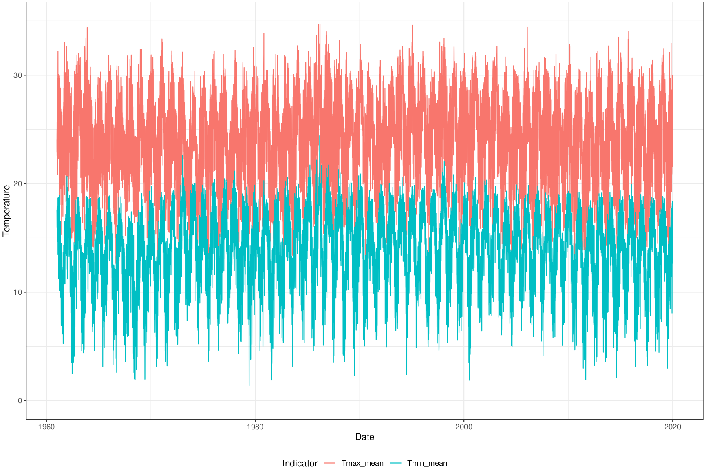

Zonal statistics of climate indicators for Brazilian municipalities

Introduction
Climate indicators are used on several statistical models for many research areas and are specially important for modelling Climate Sensitive Diseases (CSD) incidence. Those models usually adopts a lattice structure, where its data is aggregated at administrative boundaries (e.g. disease incidence), but climate indicators are usually presented in a continuous regular grid format.
To make climate indicators compatible with lattice structures, zonal statistics may be adopted. Zonal statistics are descriptive statistics calculated using a set of cells that spatially intersects a given spatial boundary. For each boundary in a map, statistics like average, maximum value, minimum value, standard deviation, and sum are obtained to represent the cell’s values that intersect the boundary.
I created some zonal statistics of climate indicators datasets for Brazilian municipalities from some climate data products.
Zonal ERA5-Land
1950-2022:
2023:
The ERA5-Land data (Muñoz-Sabater et al. 2021) presents hourly climate indicators at 0.1° × 0.1° horizontal resolution with global coverage, from 1950 to present.
The following indicators and aggregations were computed.
ERA5-Land indicators
Daily time-aggregating functions
Spatial zonal statistics
Temperature (2m)
mean, max, min
max, min, stdev, count
Dewpoint temp. (2m)
mean
max, min, stdev, count
\(u\) component of wind
mean
max, min, stdev, count
\(v\) component of wind
mean
max, min, stdev, count
Surface pressure
mean
max, min, stdev, count
Total precipitation
sum
max, min, stdev, count, sum
A paper with the full methodology was published in the Environmental Data Science journal.
Usage statistics
Usage statistics of this and other datasets are available here.
Zonal BR-DWGD
The BR-DWGD dataset (Xavier et al. 2022) presents daily meteorological data interpolated to a grid with 0.1° × 0.1° of spatial resolution for the Brazilian territory, with daily data from January 1, 1961, to July 31, 2020. It used data from 1,252 weather stations and 11,473 rain gauges in its interpolation methods, cross-validated to the selection of the best method for each weather indicator.
The following weather indicators are available from the BR-DWGD study: precipitation (mm), minimum temperature (°C), maximum temperature (°C), solar radiation (MJ⋅m−2 ), wind speed at 2m height (m⋅s−1) and relative humidity (%).
The results are availabe as parquet files, available at Zenodo and can be also accessed with the brclimr R package.
Zonal TerraClimate
The TerraClimate (Abatzoglou et al. 2018) dataset presents monthly meteorological data interpolated to a grid with 0.04° × 0.04° (1/24th degree) of spatial resolution with world cover, with monthly data from January, 1958, to December, 2021.
The following weather indicators are available from the TerraClimate study: Actual Evapotranspiration (mm), Climate Water Deficit (mm), Potential evapotranspiration(mm), Precipitation (mm), Runoff (mm), Soil Moisture (mm), Downward surface shortwave radiation (W/m2), Snow water equivalent (mm), Minimum temperature (°C), Maximum temperature (°C), Vapor pressure (kPa), Wind speed (m/s), Vapor Pressure Deficit (kpa) and Palmer Drought Severity Index.
Abatzoglou, John T., Solomon Z. Dobrowski, Sean A. Parks, and Katherine C. Hegewisch. 2018. “TerraClimate, a High-Resolution Global Dataset of Monthly Climate and Climatic Water Balance from 1958-2015.”Scientific Data 5 (January). https://doi.org/10.1038/sdata.2017.191.
Muñoz-Sabater, Joaquín, Emanuel Dutra, Anna Agustí-Panareda, Clément Albergel, Gabriele Arduini, Gianpaolo Balsamo, Souhail Boussetta, et al. 2021. “ERA5-Land: A State-of-the-Art Global Reanalysis Dataset for Land Applications.”Earth System Science Data 13 (9): 4349–83. https://doi.org/10.5194/essd-13-4349-2021.
Xavier, Alexandre C., Bridget R. Scanlon, Carey W. King, and Aline I. Alves. 2022. “New Improved Brazilian Daily Weather Gridded Data (1961).”International Journal of Climatology, December. https://doi.org/10.1002/joc.7731.